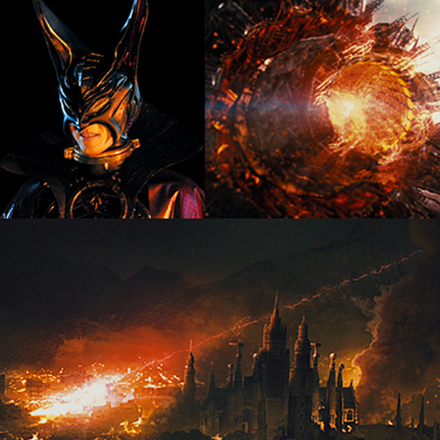

イントロダクション
総裁Xが宇宙に去ってから約3年の年月が流れた。マントル計画も順調に進み、地球は平和を取り戻した。国際科学技術庁が科学忍者隊の解散を決定した矢先、総裁Xが火の玉となって南太平洋ギルバード諸島後方100キロの海上に襲来する。そこを航行中だった豪華客船クイーンマーガレット号[3]は沈没してしまう。総裁Xはそこに乗り合わせていた子供を特殊な装置にかけ、3ヶ月程度で大人に成長させる。そしてその子供をギャラクター司令官・ゲルサドラとして仕立て上げ、ギャラクターを復活させたのだった。科学忍者隊の解散は撤回され、前作で命尽きたジョーの代わりに地球防衛軍からホーク・ゲッツが新G-2号として参加し、復活したギャラクターへの偵察を開始する。だがゲッツは敵のスパイにすり替えられていた。偽ゲッツの手引きで敵のど真ん中に誘い込まれ、窮地に陥る忍者隊だが、偽ゲッツは奇跡的に復活を遂げたジョーによって倒され、ジョーは忍者隊に復帰する。こうして科学忍者隊とギャラクターの戦いが再び始まるのだった。